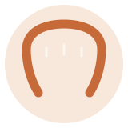

大切な歯を、ケガから守る。
スポーツ用マウスガード（マウスピース）は、運動中の衝撃から歯やお口、あごを守るための装具です。当院では、お一人おひとりの歯型に合わせたカスタムメイドをお作りします。競技やポジション、ご希望にあわせてご相談ください。（仮）
こんな方にご相談いただいています（仮）
- ぶつかり合いのあるスポーツをしている
- 競技規則でマウスガードの装着が必要
- 市販品が合わない・ずれる・話しにくい
- お子さまのスポーツで、歯やお口を守りたい
- 運動中に強く食いしばるのが気になる
なぜ、マウスガードが必要か
スポーツ中の衝突や転倒で、歯が折れる・抜ける、口びるや舌を切る、あごを痛める——こうしたケガは少なくありません。マウスガードは、その衝撃をやわらげ、歯やお口を守る助けになります。また、自分の歯で相手を傷つけてしまうのを防ぐ役割もあります。かみ合わせが安定することで、力を入れやすくなるともいわれています。
カスタムメイドと、既製品のちがい
当院では、競技や年齢、ご希望にあわせて、歯型からカスタムメイドのマウスガードをお作りします。色をお選びいただけることもあります。（仮）
作製の流れ
-
STEP 1
ご相談・お口のチェック
競技やご希望をうかがい、お口の状態を確認します。むし歯や歯ぐきの不調があれば、先に整えることをご相談します。（仮）
-
STEP 2
歯型を取ります
お口に合わせて作るため、歯型を取ります。短時間で終わります。（仮）
-
STEP 3
お渡し・調整
できあがったマウスガードを実際につけて、かみ合わせや当たりを調整します。使い方やお手入れもご案内します。（仮）
作るまえに、知っておきたいこと
よくあるご質問
- 市販のマウスピースではだめですか？
- 使えないわけではありませんが、お口に合わせていないため、ずれやすい・話しにくいことがあります。歯型に合わせたカスタムメイドは、フィットがよく、衝撃をやわらげる力にもすぐれているとされます。（仮）
- 子どもにも作れますか？
- 作れます。ただし、あごの成長や歯の生えかわりで合わなくなるため、定期的な作り替えが必要なことがあります。お子さまのスポーツにあわせてご相談ください。（仮）
- どのくらいの期間で作れますか？
- 歯型を取ってから製作し、後日お渡し・調整します。期間の目安はお口の状態によりますので、初診でお伝えします。（仮）
出典: 日本スポーツ歯科医学会 ほか。本ページの記述は一般的な情報であり、実際の作製・調整は診察のうえ個別にご説明します。